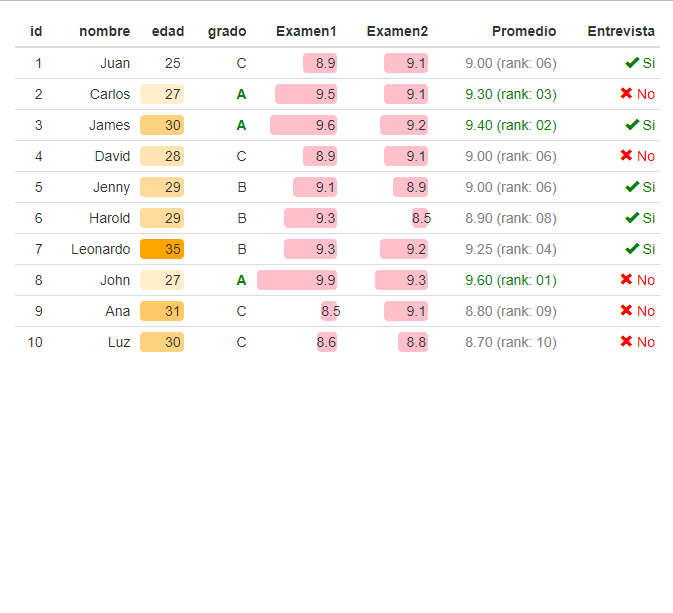

Las tablas de frecuencia constituyen una herramienta fundamental para resumir información, ya que permiten obtener una primera impresión de los valores presentes en una variable, así como identificar posibles errores de sistematización o datos faltantes (NA).
Para contar el número de datos faltantes en una base de datos, se
puede utilizar la combinación de las funciones table() e
is.na(). Adicionalmente, es posible detectar problemas de
sistematización, como categorías de una misma variable que presentan
notaciones inconsistentes.
Un ejemplo ilustrativo es la variable ubicacion de
la base de datos Cali, la cual fue construida a partir de
la información sobre Covid-19 disponible en Datos Abiertos. El siguiente
código demuestra cómo utilizar las funciones mencionadas para
identificar datos faltantes y analizar posibles inconsistencias en la
notación de las categorías de una variable:
library(paqueteMETODOS)
data("vivienda_faltantes")
# Contar datos faltantes
faltantes<- table(is.na(vivienda_faltantes))
# Verificar la variable 'ubicacion'
conteo<- table(Cali$ubicacion)
conteo
library(paqueteMETODOS)
data("vivienda_faltantes")
# Contar datos faltantes
faltantes<- table(is.na(vivienda_faltantes))
# Verificar la variable 'ubicacion'
conteo<- table(Cali$ubicacion)Al analizar las categorías de la variable ubicacion, se observan inconsistencias en la notación, ya que una misma categoría aparece representada de diferentes maneras: casa, Casa y CASA. Estas inconsistencias pueden dificultar el análisis y la interpretación de los datos, especialmente en la generación de tablas de frecuencia y resúmenes estadísticos.
casa Casa CASA Fallecido Hospital Hospital UCI 300 393547 5 8929 20 1 N/A 3343
Las distribuciones de frecuencia, también conocidas como tablas de frecuencia, son herramientas útiles para agrupar datos y obtener una visión más clara de sus características. Estas tablas están compuestas por una primera columna que presenta las clases (filas de la tabla), las cuales corresponden a las categorías observadas de una variable cualitativa.
Cuando la variable tiene una escala de medición nominal, el ordenamiento de las categorías dentro de la tabla de frecuencias queda a discreción del investigador. Por el contrario, si la variable posee una escala ordinal, el ordenamiento de las categorías debe respetar la jerarquía inherente a dicha escala, asegurando que refleje adecuadamente la relación entre las categorías.
Para las variables cualitativas en escala nominal, las tablas de frecuencia constan de tres columnas principales, organizadas de la siguiente manera:
| Columna | Símbolo | Descripción |
|---|---|---|
| c1 | Representa los diferentes valores que toma la variable. | |
| c2 | \(n_{i}\) | Frecuencia absoluta, que indica el conteo de cada uno de los valores distintos que toma la variable. |
| c3 | \(f_{i}\) | Frecuencia relativa, expresada como el porcentaje de la cantidad total de datos correspondientes a cada valor. |
En el caso de las variables cualitativas en escala ordinal, además de las columnas descritas en el ejemplo anterior, se incorporan dos columnas adicionales que permiten analizar los datos en función de su acumulación. Estas son:
| Columna | Símbolo | Descripción |
|---|---|---|
| c4 | \(N_{i}\) | Frecuencia absoluta acumulada, que indica el conteo de los casos menores o iguales al nivel correspondiente. |
| c5 | \(F_{i}\) | Frecuencia relativa acumulada, que expresa el porcentaje acumulado hasta el nivel correspondiente. |
Estas columnas adicionales son particularmente útiles para interpretar el comportamiento de las variables ordinales, proporcionando una visión acumulativa que facilita el análisis de tendencias o patrones jerárquicos.
En este ejemplo se presentan los códigos de R y la tabla para una variable cualitativa nominal: confederaciones participantes en Qatar 2022.
# Instalar y cargar el paquete necesario
# install.packages("kableExtra")
library(kableExtra)
# Datos
Confederaciones <- c("Africa - CFA", "Asia - AFC", "Europa - UEFA", "Centro, Norte América - CONCACAF", "Oceanía - OFC", "Suramérica - COMEBOL")
Frecuencia_abs <- c(5, 5, 13, 4, 0, 4)
Frecuencia_rel <- Frecuencia_abs / sum(Frecuencia_abs)
# Crear el dataframe
df <- data.frame(Confederaciones, Frecuencia_abs, Frecuencia_rel)
# Crear la tabla formateada con kableExtra
tabla11 <- df %>%
kbl() %>%
kable_paper(full_width = FALSE) %>%
row_spec(0, bold = TRUE) %>%
column_spec(2:3, width = "1cm") %>%
collapse_rows(columns = 1, valign = "middle")
# Mostrar la tabla formateada
# tabla11
# Instalar y cargar el paquete necesario
# install.packages("kableExtra")
library(kableExtra)
# Datos
Confederaciones <- c("Africa - CFA", "Asia - AFC", "Europa - UEFA", "Centro, Norte América - CONCACAF", "Oceanía - OFC", "Suramérica - COMEBOL")
Frecuencia_abs <- c(5, 5, 13, 4, 0, 4)
Frecuencia_rel <- Frecuencia_abs / sum(Frecuencia_abs)
# Crear el dataframe
df <- data.frame(Confederaciones, Frecuencia_abs, Frecuencia_rel)
# Crear la tabla formateada con kableExtra
tabla11 <- df %>%
kbl() %>%
kable_paper(full_width = FALSE) %>%
row_spec(0, bold = TRUE) %>%
column_spec(2:3, width = "1cm") %>%
collapse_rows(columns = 1, valign = "middle")
# Mostrar la tabla formateada
# tabla11Tabla 1.25 Distribución del número de equipos participantes en Qatar 2022 por confederaciones.
Confederaciones Frecuencia_abs Frecuencia_rel Africa - CFA 5 0.1612903 Asia - AFC 5 0.1612903 Europa - UEFA 13 0.4193548 Centro, Norte América - CONCACAF 4 0.1290323 Oceanía - OFC 0 0.0000000 Suramérica - COMEBOL 4 0.1290323
En la Tabla 1.25, se destaca la mayor participación de los países afiliados a la UEFA, que representan 13 países, equivalentes al 41.9% del total de participantes. Les siguen la CFA y la AFC, cada una con una participación del 16.1%.
En este ejemplo, se presentan los códigos utilizados y la tabla resultante para la variable cualitativa ordinal: Nivel de calificación (ver Tabla 1.26).
# Crear un vector que contiene los niveles de calificación, replicando cada categoría
# según su frecuencia observada.
Nivel.Calificacion = c(
rep("1. Muy regular", 12837), # Repite la categoría "1. Muy regular" 12,837 veces.
rep("2. Regular", 21988), # Repite la categoría "2. Regular" 21,988 veces.
rep("3. Bueno", 22300), # Repite la categoría "3. Bueno" 22,300 veces.
rep("4. Muy bueno", 24466), # Repite la categoría "4. Muy bueno" 24,466 veces.
rep("5. Excelente", 22313) # Repite la categoría "5. Excelente" 22,313 veces.
)
# Generar una tabla de frecuencias absolutas de la variable `Nivel.Calificacion`.
t1 = table(Nivel.Calificacion)
# Generar una tabla de frecuencias detallada que incluye frecuencias absolutas,
# relativas, acumuladas y porcentajes, utilizando la función `freq()` del paquete `summarytools`.
# summarytools::freq(Nivel.Calificacion)
# Crear un vector que contiene los niveles de calificación, replicando cada categoría
# según su frecuencia observada.
Nivel.Calificacion = c(
rep("1. Muy regular", 12837), # Repite la categoría "1. Muy regular" 12,837 veces.
rep("2. Regular", 21988), # Repite la categoría "2. Regular" 21,988 veces.
rep("3. Bueno", 22300), # Repite la categoría "3. Bueno" 22,300 veces.
rep("4. Muy bueno", 24466), # Repite la categoría "4. Muy bueno" 24,466 veces.
rep("5. Excelente", 22313) # Repite la categoría "5. Excelente" 22,313 veces.
)
# Generar una tabla de frecuencias absolutas de la variable `Nivel.Calificacion`.
t1 = table(Nivel.Calificacion)
# Generar una tabla de frecuencias detallada que incluye frecuencias absolutas,
# relativas, acumuladas y porcentajes, utilizando la función `freq()` del paquete `summarytools`.
# summarytools::freq(Nivel.Calificacion)Tabla 1.26 : Nivel de satisfacción usuarios aerolinea, servicio de alimentación/bebidas.
Frequencies
Calificacion
Type: Character
Freq % Valid % Valid Cum. % Total % Total Cum.
-------------------- -------- --------- -------------- --------- --------------
1. Muy regular 12837 12.35 12.35 12.35 12.35
2. Regular 21988 21.16 33.52 21.16 33.52
3. Bueno 22300 21.46 54.98 21.46 54.98
4. Muy bueno 24466 23.55 78.53 23.55 78.53
5. Excelente 22313 21.47 100.00 21.47 100.00
0 0.00 100.00
Total 103904 100.00 100.00 100.00 100.00
En este caso, el orden de los resultados es relevante, dado que se trata de una variable en escala ordinal. Se observa que el 33.52% de las respuestas corresponden a las categorías Regular y Muy regular, mientras que el 66.48% restante agrupa respuestas favorables, correspondientes a las categorías Bueno, Muy bueno y Excelente.
Con el paquete formattable, es posible construir tablas
más elegantes y visualmente atractivas, lo que facilita tanto la
interpretación como el análisis de datos. A continuación, se presenta un
conjunto de datos ficticio con información de estudiantes, acompañado de
los códigos utilizados para aplicar formatos personalizados. Los
resultados obtenidos se muestran en la Tabla 1.27.
La intensidad de los colores asignados a los valores de las variables permite identificar de manera inmediata aquellos valores más altos, proporcionando un enfoque visual que mejora la comprensión de los datos.
# Crear un data frame con información ficticia de estudiantes
df <- data.frame(
id = 1:10, # Identificador único para cada estudiante
nombre = c("Juan", "Carlos", "James", "David", "Jenny",
"Harold", "Leonardo", "John", "Ana", "Luz"), # Nombres de los estudiantes
edad = c(25, 27, 30, 28, 29, 29, 35, 27, 31, 30), # Edades de los estudiantes
grado = c("C", "A", "A", "C", "B", "B", "B", "A", "C", "C"), # Grados asignados (A, B, C)
Examen1 = c(8.9, 9.5, 9.6, 8.9, 9.1, 9.3, 9.3, 9.9, 8.5, 8.6), # Calificaciones del primer examen
Examen2 = c(9.1, 9.1, 9.2, 9.1, 8.9, 8.5, 9.2, 9.3, 9.1, 8.8), # Calificaciones del segundo examen
Promedio = c(9, 9.3, 9.4, 9, 9, 8.9, 9.25, 9.6, 8.8, 8.7), # Promedio de calificaciones
Entrevista = c(TRUE, FALSE, TRUE, FALSE, TRUE, TRUE, TRUE, FALSE, FALSE, FALSE), # Resultado de la entrevista (TRUE para aprobado, FALSE para no aprobado)
stringsAsFactors = FALSE # Evitar que las columnas de texto se conviertan automáticamente en factores
)
# Cargar la librería 'formattable' para dar formato visual a los datos
library(formattable)
# Aplicar formato a las columnas del data frame y visualizarlo
formattable(df, list(
# Aplicar un degradado de color en la columna 'edad'
edad = color_tile("white", "orange"),
# Dar formato a la columna 'grado' resaltando en verde y en negrita los valores "A"
grado = formatter("span",
style = x ~ ifelse(x == "A",
style(color = "green", font.weight = "bold"), NA)),
# Normalizar las columnas 'Examen1' y 'Examen2' y representarlas como barras horizontales
area(col = c(Examen1, Examen2)) ~ normalize_bar("pink", 0.2),
# Formatear la columna 'Promedio' mostrando el valor con dos decimales y su rango,
# resaltando en verde los 3 primeros promedios más altos
Promedio = formatter("span",
style = x ~ style(color = ifelse(rank(-x) <= 3, "green", "gray")),
x ~ sprintf("%.2f (rank: %02d)", x, rank(-x))),
# Dar formato a la columna 'Entrevista', usando íconos e indicando "Sí" o "No" en texto
Entrevista = formatter("span",
style = x ~ style(color = ifelse(x, "green", "red")),
x ~ icontext(ifelse(x, "ok", "remove"), ifelse(x, "Sí", "No")))
))
# Crear un data frame con información ficticia de estudiantes
df <- data.frame(
id = 1:10, # Identificador único para cada estudiante
nombre = c("Juan", "Carlos", "James", "David", "Jenny",
"Harold", "Leonardo", "John", "Ana", "Luz"), # Nombres de los estudiantes
edad = c(25, 27, 30, 28, 29, 29, 35, 27, 31, 30), # Edades de los estudiantes
grado = c("C", "A", "A", "C", "B", "B", "B", "A", "C", "C"), # Grados asignados (A, B, C)
Examen1 = c(8.9, 9.5, 9.6, 8.9, 9.1, 9.3, 9.3, 9.9, 8.5, 8.6), # Calificaciones del primer examen
Examen2 = c(9.1, 9.1, 9.2, 9.1, 8.9, 8.5, 9.2, 9.3, 9.1, 8.8), # Calificaciones del segundo examen
Promedio = c(9, 9.3, 9.4, 9, 9, 8.9, 9.25, 9.6, 8.8, 8.7), # Promedio de calificaciones
Entrevista = c(TRUE, FALSE, TRUE, FALSE, TRUE, TRUE, TRUE, FALSE, FALSE, FALSE), # Resultado de la entrevista (TRUE para aprobado, FALSE para no aprobado)
stringsAsFactors = FALSE # Evitar que las columnas de texto se conviertan automáticamente en factores
)
# Cargar la librería 'formattable' para dar formato visual a los datos
library(formattable)
# Aplicar formato a las columnas del data frame y visualizarlo
formattable(df, list(
# Aplicar un degradado de color en la columna 'edad'
edad = color_tile("white", "orange"),
# Dar formato a la columna 'grado' resaltando en verde y en negrita los valores "A"
grado = formatter("span",
style = x ~ ifelse(x == "A",
style(color = "green", font.weight = "bold"), NA)),
# Normalizar las columnas 'Examen1' y 'Examen2' y representarlas como barras horizontales
area(col = c(Examen1, Examen2)) ~ normalize_bar("pink", 0.2),
# Formatear la columna 'Promedio' mostrando el valor con dos decimales y su rango,
# resaltando en verde los 3 primeros promedios más altos
Promedio = formatter("span",
style = x ~ style(color = ifelse(rank(-x) <= 3, "green", "gray")),
x ~ sprintf("%.2f (rank: %02d)", x, rank(-x))),
# Dar formato a la columna 'Entrevista', usando íconos e indicando "Sí" o "No" en texto
Entrevista = formatter("span",
style = x ~ style(color = ifelse(x, "green", "red")),
x ~ icontext(ifelse(x, "ok", "remove"), ifelse(x, "Sí", "No")))
))Tabla 1.27 : Distribución de frecuencia de la información de los estudiantes del proceso de admisión.
